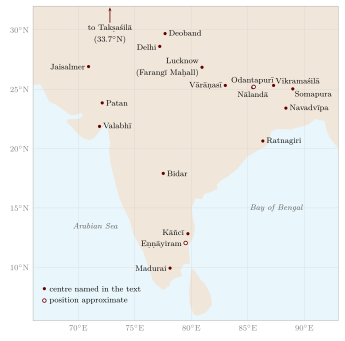

Chapter 11: Monasteries, Colleges and Schools: From Takṣaśilā to the Madrasa¶
kaṟka kacaṭaṟak kaṟpavai kaṟṟapiṉ
niṟka ataṟkut taka
Learn faultlessly what is worth learning; and once it is learned, live in keeping with it.
— Tirukkuṟaḷ 391
11.1 Introduction¶
Alongside the household of the individual teacher, India developed larger institutions of learning: Buddhist monasteries that became centres of advanced study for students from across Asia, Brahmanical colleges endowed with land by kings and temples, Jain monastic lineages with their great libraries, Islamic schools and colleges, Sikh schools of the scripture, and countless village schools teaching reading, writing and arithmetic. Figure 11.1 locates the principal centres. Popular writing about these institutions is full of exaggeration. Takṣaśilā is called “the world’s first university”; Nālandā’s library is said to have held “nine million manuscripts” and to have burned for months; the destruction of the monasteries is presented as the single cause of the decline of Indian learning. This chapter tries to distinguish the evidence — inscriptions, excavations, the accounts of Chinese and Tibetan visitors, the Persian chronicles and, for the last period, the colonial surveys — from the legends, without diminishing what was genuinely achieved. It ends around 1800; the colonial surveys themselves, the first modern colleges and the schooling of girls from the 1820s are described in Chapter 13.
The word “university” itself needs care. The medieval European universities were corporations of masters or students with legal privileges and degree-granting powers. No Indian institution was a university in that sense. The great Buddhist monasteries were, however, residential communities of scholars with libraries, endowments, organised teaching and a selective admission process, and it is reasonable to compare them with universities, provided the comparison is not used to make anachronistic claims of priority.

11.2 Takṣaśilā¶
11.2.1 What the Sources Say¶
Takṣaśilā (Pali Takkasilā, Greek Taxila), near modern Rawalpindi in Pakistan, was a major city of the north-west from at least the fifth century BCE. Its reputation as a place of learning rests mainly on Buddhist literature:
-
Many Jātaka stories tell of young men, usually Brahmins or princes from Vārāṇasī or elsewhere, who travel to Takkasilā to study with a “world-renowned teacher” (disāpāmokkha ācariya), learning the three Vedas and the “eighteen arts” (sippa) — a conventional phrase whose contents are not specified — and paying a fee or working in return.
-
The Vinaya (Mahāvagga 8) tells how Jīvaka, later physician to the Buddha and to King Bimbisāra, studied medicine at Takṣaśilā for seven years; his final examination was to search the countryside for a plant without medicinal use, and he returned saying he had found none.
-
Later tradition associates the grammarian Pāṇini (c. 4th century BCE) with the region — he came, by tradition, from Śalātura nearby — and makes Cāṇakya (Kauṭilya), the legendary minister of Candragupta Maurya, a man of Takṣaśilā. These associations are late and uncertain, and there is no early evidence that either taught there. The common claim that the physician Caraka studied or taught at Takṣaśilā has no support in the sources.
The Jātakas give glimpses of life in a Takṣaśilā teacher’s household. In the Tilamuṭṭhi Jātaka, for example, a prince of Vārāṇasī studying there steals sesame seeds from an old woman; the teacher has him beaten, and the prince, resentful, resolves to take revenge when he becomes king — but in the end recognises that the punishment made him a better ruler. Such stories, told by Buddhist monks to make moral points, are not historical records, but they show what Indian audiences of the early centuries CE took for granted about a famous teacher’s school: residence in the teacher’s house, payment or service, discipline that might be harsh, and a mixed body of students from distant places.
11.2.2 What It Was Not¶
The Greek historians of Alexander’s campaign, who describe Taxila as a large and prosperous city in 326 BCE, say nothing about a university. John Marshall’s excavations of the three successive cities (Bhir Mound, Sirkap and Sirsukh) and of the Buddhist monasteries around them uncovered houses, streets, shrines and monasteries, but no institutional complex for teaching (Marshall 1951). The picture that emerges from the Jātakas is of a city where famous individual teachers took students into their households — the teacher’s-household model on a larger scale — not of an organised institution with a curriculum, administration and degrees. The monasteries of the area became centres of Buddhist learning in the Kuṣāṇa period, and Xuanzang, visiting in the seventh century, found them largely in ruins.
“Takṣaśilā, the world’s first university” is therefore a modern anachronism (Scharfe 2002). What can be said is that Takṣaśilā was, for some centuries, a city famous for its teachers, especially in medicine and the Brahmanical sciences, to which students travelled from far away. The archaeological site of Taxila was inscribed on UNESCO’s World Heritage List in 1980.
11.3 Buddhist Monastic Education¶
Buddhist monasteries were the first Indian institutions in which education was organised collectively. A novice (sāmaṇera) was placed under a preceptor (upajjhāya) and a teacher (ācariya), with whom he lived in a relationship of mutual obligation closely modelled on that of father and son; the Vinaya specifies their duties to each other in detail. Monks memorised and recited the discourses and the monastic code (the pāṭimokkha, recited fortnightly); they specialised as reciters (bhāṇaka) of particular collections; and, in time, they studied Abhidharma, grammar, logic and medicine.
Unlike the Brahmanical schools, the monastic order admitted men and women of any caste. There were exclusions — the Vinaya forbids the ordination of slaves, debtors, soldiers in royal service and people with certain diseases — and the order of nuns (bhikkhunī), though it allowed women to pursue learning and religious life, was formally subordinate to the order of monks through the “eight weighty rules” (garudhamma). Within these limits, the Buddhist and Jain orders offered the most socially open form of advanced education in ancient India (Dutt 1962).
The Buddha’s teaching to lay people also addressed education. In the Sigālovāda Sutta (Dīgha Nikāya 31), a discourse on the duties of a householder, the relationship between pupil and teacher is one of six reciprocal relationships. The pupil should honour the teacher by rising to greet him, by waiting on him, by eagerness to learn, by service, and by attentiveness in receiving instruction; the teacher in return should train the pupil well, make sure he has grasped what he has learned, teach him thoroughly in every art, speak well of him to friends and colleagues, and provide for his safety. The reciprocity of obligations is characteristic of the Buddhist ethical vision.
The Chinese pilgrim Yijing, who lived in India from 673 to 685, ten years of it at Nālandā, describes the course of study followed by monks and lay students: first a primer of the alphabet, then Pāṇini’s grammar, the list of verbal roots and the Kāśikā commentary, then logic and Abhidharma, and finally the special study of a school’s texts. He notes that students spent two or three years at Nālandā or at Valabhī in western India to perfect their learning before seeking positions at court (Takakusu 1896).
11.4 Nālandā¶
11.4.1 Foundation and Growth¶
Nālandā, south of Patna in Bihar, was the most famous Buddhist monastery of India. Seals and inscriptions found in the excavations, together with Xuanzang’s account, place its foundation as a major monastery in the fifth century CE under the Gupta kings; the king Xuanzang calls Śakrāditya is usually identified with Kumāragupta I (r. c. 415–455). It grew over the following centuries through royal and private donations: Harṣavardhana of Kanauj in the seventh century, and from the eighth to the twelfth centuries the Pāla kings of Bengal and Bihar. A copper-plate grant of the Pāla king Devapāla (ninth century) records the gift of villages to a monastery at Nālandā built by Bālaputradeva, a Śailendra king of Suvarṇadvīpa (Sumatra) — evidence of the institution’s international reach (Sankalia 1934).
The excavations have also yielded many clay seals. The community’s own seal, showing the wheel of the teaching flanked by two deer, bears an inscription naming “the community of venerable monks of the great monastery of Śrī Nālandā” — evidence that the monastery acted as a corporate body, sending and receiving correspondence and goods. Seals of Gupta and later kings and of other monasteries, found at the site, show the network of patrons and institutions with which it was connected.
11.4.2 The Chinese Witnesses¶
Our best descriptions come from Chinese visitors (Table 11.2). Xuanzang (travelled 629–645; in India c. 630–643) studied at Nālandā under the abbot Śīlabhadra. His biographer Huili reports that the monastery housed some ten thousand monks and had 1,510 teachers, figures that should be treated as approximate. Xuanzang describes the gatekeepers who examined applicants in debate, saying that of those who came from abroad only two or three in ten succeeded; the daily round of lectures and discussions; and the support of the community by the revenues of villages granted by kings (Beal 1884). Yijing, a generation later, gives a more sober figure of over three thousand monks and describes the monastery’s buildings, its rules and its daily life in detail (Takakusu 1896).
11.4.3 Daily Life¶
Yijing describes the monastery’s routine in his record of Buddhist practice in India (Takakusu 1896). Time was measured by a water clock, and the hours were announced by drum or bell. Monks bathed daily in the large tanks within the compound; meals were taken before noon, according to monastic rule; the evening was given to chanting hymns of praise, led in turn through the halls. The community was governed by its senior monks, who decided matters collectively; a steward (karmadāna) managed practical affairs. Yijing reports that the monastery was supported by the revenues of more than two hundred villages granted by successive kings, so that the monks did not need to beg. The excavations, which have uncovered rows of monasteries built around courtyards, with cells for the monks, lecture platforms, wells and kitchens, confirm the picture of a large, well-organised residential community.
Teaching at Nālandā centred on Mahāyāna philosophy — Madhyamaka and Yogācāra — and on logic and epistemology in the tradition of Dignāga and Dharmakīrti, but included grammar, medicine and the study of non-Buddhist systems needed for debate. In the later centuries Tantric Buddhism became prominent. Among the scholars traditionally associated with Nālandā are Dharmapāla, Śīlabhadra, Candrakīrti, Śāntideva, Śāntarakṣita and Kamalaśīla; some of these associations rest on Tibetan tradition rather than contemporary evidence.
11.4.4 The Library¶
Nālandā certainly possessed large collections of manuscripts: Yijing took several hundred Sanskrit texts back to China. The names of its library buildings — the “mart of religion” (Dharmagañja) with three buildings called Ratnasāgara, Ratnodadhi and Ratnarañjaka, one of them said to be nine storeys high — come from much later Tibetan sources, notably the historian Tāranātha (early seventeenth century), and cannot be confirmed. No source gives a figure for the number of manuscripts. The often-repeated claim that the library held “nine million manuscripts” has no historical basis; nor does the story that it burned for three months.
11.4.5 Destruction and Decline¶
In the last years of the twelfth century the Turkish commander Muḥammad Bakhtiyār Khaljī, operating on behalf of the Ghurid rulers, raided Bihar and then conquered western Bengal. The Persian chronicler Minhāj-i Sirāj, writing his Ṭabaqāt-i Nāṣirī about sixty years later, describes the sack of a fortified place in Bihar full of books and inhabited by shaven-headed “Brahmins” (evidently Buddhist monks), who were killed; when the victors found the books, they could find no one left alive to read them. The place is usually identified with the monastery of Odantapurī (modern Bihar Sharif). The great monasteries of the region, Nālandā among them, were sacked or abandoned in the course of these campaigns, c. 1193–1205; the date “c. 1200” is the safest summary, and the precise years 1193 or 1203 often given for Nālandā are not securely established.
Nālandā did not vanish at once. The Tibetan monk Dharmasvāmin, who visited in 1234–1236, found most buildings damaged and deserted, but an aged teacher, Rāhula Śrībhadra, still teaching some seventy students, who hid when raiders from the nearby Turkish garrison approached (Roerich 1959). Activity dwindled thereafter.
Historians of Indian Buddhism emphasise that its decline had several causes (Dutt 1962; Warder 2000): the Turkish raids destroyed the major monasteries and their endowments, but Buddhism had already lost much of its lay base outside eastern India, depended heavily on royal patronage that ended with the Pāla dynasty, and faced competition from Brahmanical and devotional movements. Many monks and texts survived by moving to Tibet and Nepal, where much of the late Indian Buddhist literature is now preserved. The site of Nālandā Mahāvihāra was inscribed on UNESCO’s World Heritage List in 2016; the modern Nālandā University, established by Act of Parliament in 2010, is discussed in Chapter 13.
11.5 Other Monastic Centres¶
Table 11.1 summarises the major Buddhist monastic centres of learning; the most important after Nālandā are described below.
| Centre | Location | Period | Notes |
|---|---|---|---|
| Nālandā | Bihar | 5th c.–c. 1200 (reduced activity after) | Gupta, Harṣa and Pāla patronage; Xuanzang and Yijing studied there |
| Valabhī | Saurashtra, Gujarat | 6th–8th c. | Capital of the Maitrakas; many monasteries; named by Yijing alongside Nālandā |
| Vikramaśilā | Antichak, Bihar | late 8th c.–early 13th c. | Founded by Dharmapāla; Tibetan accounts of six “gate scholars”; Atiśa |
| Odantapurī | Bihar Sharif, Bihar | 8th c.–c. 1200 | Pāla foundation; Tibetan tradition makes it the model for Samye |
| Somapura | Paharpur, Bangladesh | late 8th c.–12th c. | Founded by Dharmapāla; one of the largest monasteries in South Asia |
| Jagaddala | Northern Bengal | c. 1100–early 13th c. | Founded by Rāmapāla |
| Ratnagiri | Odisha | 5th–13th c. | Important Vajrayāna centre with Lalitagiri and Udayagiri |
11.5.1 Vikramaśilā¶
Vikramaśilā was founded by the Pāla king Dharmapāla (r. c. 775–812), and its remains have been excavated at Antichak in Bhagalpur district. Tibetan sources describe it as organised under a council of senior monks and guarded by six “gate scholars” (dvārapaṇḍita), each a famous teacher, who examined applicants — a tradition that names, among others, Ratnākaraśānti, Prajñākaramati, Vāgīśvarakīrti, Nāropa, Ratnavajra and Jñānaśrīmitra. Its best-known scholar is the Bengali teacher Atiśa Dīpaṅkara Śrījñāna (982–1054), who went to Tibet at the invitation of its western kings and arrived in 1042, where his teaching shaped the later spread of Buddhism. Vikramaśilā was destroyed in the early thirteenth century in the same campaigns that ended Nālandā and Odantapurī; Tibetan tradition records that its last great scholar, the Kashmiri Śākyaśrībhadra, fled to Tibet.
11.5.2 Valabhī¶
Valabhī, the capital of the Maitraka kings of Saurashtra (5th–8th centuries), had many monasteries; Xuanzang reports about a hundred, with some six thousand monks, mainly of the Sāṃmitīya school. Yijing names it with Nālandā as a place where advanced students completed their education. Valabhī is also important in Jain history: a council of Śvetāmbara monks held there under Devarddhigaṇi in the fifth century (c. 453 or 466 CE) fixed and wrote down the Jain canon. The claim, sometimes made, that a Buddhist council was held at Valabhī confuses it with this Jain council.
11.6 The Heirs of the Indian Monasteries¶
The tradition of the north Indian monasteries did not end with their destruction; it was carried on outside India. In Tibet, the great monastic colleges founded from the eleventh century onwards — and especially the Geluk monasteries of Drepung, Sera and Ganden near Lhasa, founded in the fifteenth century — organised their curricula around the Indian treatises on Abhidharma, Madhyamaka, Prajñāpāramitā, monastic discipline and epistemology that had been studied at Nālandā and Vikramaśilā. Their characteristic method of teaching through formal debate in the monastery courtyard preserves, in a developed form, the Indian Buddhist culture of disputation. After 1959 several of these institutions were re-established in exile in India, in Karnataka and elsewhere, so that a tradition of Indian origin returned to Indian soil.
In Sri Lanka and Southeast Asia, the Theravāda monasteries maintained the Pali scholastic tradition, with its commentaries and Abhidhamma manuals. Monastic colleges (pirivena) trained monks in Pali, Sanskrit and Buddhist doctrine; in the nineteenth century colleges such as Vidyodaya (1873) and Vidyalankara (1875) in and near Colombo became leading centres of Buddhist learning and, in the twentieth, the nuclei of national universities.
| Visitor | In India | Significance |
|---|---|---|
| Faxian | c. 402–411 | Earliest Chinese pilgrim’s account; describes monasteries and copying of the Vinaya in Pāṭaliputra |
| Xuanzang | c. 630–643 | Studied at Nālandā under Śīlabhadra; detailed description of Indian regions and monasteries |
| Yijing | 673–685 | Ten years at Nālandā; account of monastic rules and the course of study |
| Dharmasvāmin | 1234–1236 | Tibetan monk who found Nālandā damaged but still teaching |
11.6.1 Odantapurī and Samye¶
Tibetan historical tradition holds that the first Buddhist monastery in Tibet, Samye, founded in the late eighth century under King Khri srong lde btsan with the help of the Indian teachers Śāntarakṣita and Padmasambhava, was modelled on the plan of Odantapurī. The surviving layout of Samye, with a central temple surrounded by shrines arranged as a cosmic diagram, is consistent with the Indian monastic architecture of the Pāla period. Whatever the precise relationship, the tradition reflects the decisive role of the monasteries of eastern India in the transmission of Buddhism and of Indian learning to Tibet.
11.7 Brahmanical Institutions¶
Brahmanical higher learning also became institutionalised, largely through endowments.
-
Agrahāras. Kings granted villages or land, free of tax, to communities of learned Brahmins. Thousands of copper-plate grants record such gifts from the Gupta period onwards. An agrahāra was a settlement, not a school, but it supported learned families who taught their own and others’ sons.
-
Ghaṭikās. In the south, inscriptions mention ghaṭikās, assemblies or colleges of learned Brahmins. The fifth-century Talagunda inscription relates how Mayūraśarman, founder of the Kadamba dynasty, went to the ghaṭikā of the Pallava capital Kāñcī to study the Veda, quarrelled with a Pallava horseman and took up arms — the earliest reference to such an institution.
-
Temple colleges. In the Cōḻa period (10th–12th centuries), inscriptions record endowments for colleges attached to temples, for example at Eṇṇāyiram (in the reign of Rājendra I), Tribhuvani and Tirumukkūḍal, specifying the numbers of students and teachers, the subjects (Veda, grammar, Mīmāṃsā, Vedānta) and the rations provided; the Tirumukkūḍal endowment also supported a hospital. In Kerala, inscriptions mention śālais, residential schools for Brahmin students, such as those at Kāntaḷūr and Pārthivapuram (9th century).
-
Maṭhas. From the later first millennium, Śaiva and Vaiṣṇava monasteries (maṭha) became centres of teaching and manuscript collection, such as the Kālāmukha maṭhas of Karnataka and the monasteries associated, by later tradition, with Śaṅkara.
-
Colleges in the Deccan. Inscriptions from Karnataka and the Deccan record colleges supported by temples and villages. A tenth-century inscription from Salotgi in northern Karnataka records the endowment of a college attached to a temple, with lodging for students who came from different regions, and inscriptions from the Kalyāṇa Cāḷukya period record agrahāras and maṭhas that maintained teachers of grammar, logic, Mīmāṃsā and other subjects.
-
Centres of śāstric study. In the second millennium certain towns became famous for particular disciplines: Mithilā and then Navadvīpa in Bengal for the “new” logic (Navya-Nyāya), Vārāṇasī for almost all the śāstras, Kashmir for poetics and Śaiva philosophy. In Bengal and Bihar, traditional Sanskrit schools (ṭol, catuṣpāṭhī) were run by individual scholars in their homes, supported by gifts and land, and continued into the twentieth century.
11.7.1 Regional Centres: Kashmir and Kerala¶
Two regions at opposite ends of the subcontinent illustrate the vitality of regional traditions of learning. Kashmir was celebrated as a land of scholars: its Buddhist monasteries were centres of Sarvāstivāda learning in the early centuries CE, and in the late first millennium it produced the Śaiva philosophers Utpaladeva and Abhinavagupta, the poeticians Ānandavardhana, Kuntaka and Mammaṭa, and the historian Kalhaṇa, whose Rājataraṅgiṇī (1148–49) is the most important work of Sanskrit historiography. Kashmir’s script, Śāradā, takes its name from the goddess of learning worshipped there, and Kashmiri scholars travelled widely across India and to Tibet.
In Kerala, the Nambūdiri Brahmins preserved distinctive Vedic traditions (Chapter 10), and learning was cultivated in family houses (illam) and temple institutions. Between the fourteenth and sixteenth centuries a school of mathematicians and astronomers founded by Mādhava of Saṅgamagrāma developed infinite series for trigonometric functions and for \(\pi\); their work was transmitted from teacher to pupil within a small circle of families and recorded in Sanskrit and Malayalam texts such as the Yuktibhāṣā (Chapter 9). The Kerala school shows how significant innovation could take place within traditional, lineage-based teaching.
Like the teacher’s household, these institutions served Brahmin students almost exclusively.
11.7.2 Learning in the Tamil Country¶
The Tamil country shows a different pattern, in which Jain and Buddhist monks, Śaiva monasteries and a vernacular literary tradition all played a part. The earliest Tamil writing, in Tamil-Brāhmī script, is found, on the most widely accepted dating, from about the second century BCE (some recent finds have been argued to be earlier) carved above stone beds in natural rock shelters, many of them in the hills around Madurai; the inscriptions record gifts of these shelters to ascetics, mostly Jain, by chiefs and by merchants, among others (Mahadevan 2003). The association lasted: the Jain or Buddhist retreat (paḷḷi) gave modern Tamil its ordinary word for a school (paḷḷi, paḷḷikkūṭam).
The Caṅkam anthologies of the early centuries CE presuppose trained poets working within a demanding set of literary conventions, and the names attached to the poems include those of women and of men described by occupation. The later tradition that these poets met in three successive “academies” (caṅkam) lasting thousands of years (the first two in cities later swallowed by the sea, the third at Madurai), told in the commentary on the Iṟaiyaṉār Akapporuḷ, is a legend, not a record of an institution. The Tirukkuṟaḷ, whose date is disputed (estimates range from the early centuries CE to about the sixth century), devotes three successive chapters to learning (kalvi), the lack of learning (kallāmai) and listening to the learned (kēḷvi). The first of them opens with the couplet quoted at the head of this chapter (Kuṟaḷ 391), and another compares knowledge to the water of a well dug in sand, which flows in proportion to the digging (Kuṟaḷ 396).
In the second millennium the non-Brahmin Śaiva monasteries (maṭha) of the Tamil country, such as those of Tiruvāvaṭuturai and Dharmapuram, became centres for the teaching of Tamil literature, grammar and Śaiva Siddhānta. The poet and teacher Mīṉāṭcicuntaram Piḷḷai, who taught there in the nineteenth century, was the teacher of U. V. Swaminatha Iyer, whose recovery of the classical Tamil texts is described in Chapter 12. Elementary teaching, meanwhile, went on in the verandah (tiṇṇai) schools described below.
11.7.3 Sanskrit Learning in the Early Modern Period¶
Sanskrit scholarship did not decline under Muslim rule, as is sometimes assumed; in several fields the sixteenth and seventeenth centuries were a period of intense activity. Vārāṇasī attracted scholars from all over India, Navadvīpa was the leading centre of Navya-Nyāya, and Sanskrit intellectuals served at Mughal and Rajput courts as well as in Hindu kingdoms. The poet and theorist Jagannātha Paṇḍitarāja worked at the court of Shāh Jahān; the Vārāṇasī scholar Kavīndrācārya Sarasvatī, who led a successful petition to Shāh Jahān for the remission of the pilgrim tax, assembled a large library whose catalogue survives. Sanskrit works were translated into Persian at Akbar’s court, and Persian works into Sanskrit. Sheldon Pollock and the contributors to his collaborative study of early modern Indian knowledge have described the period as one of both innovation and anxiety for Sanskrit intellectuals, who were acutely aware of their changing world; Pollock has also argued that by the eighteenth century this creativity had largely given way to repetition, a thesis that remains debated (Pollock 2011; Pollock 2001).
11.8 The Culture of Debate¶
Debate was the characteristic activity of advanced learning in all traditions. Its roots are Vedic: the ritual included verbal contests of riddles (brahmodya), and the Bṛhadāraṇyaka Upaniṣad (book 3) describes a great contest at the court of King Janaka, who offered a thousand cows with gold tied to their horns to the most learned of the Brahmins. Yājñavalkya claims the prize and is challenged in turn by eight questioners, among them Gārgī Vācaknavī, who questions him twice and finally declares that none of the assembled Brahmins will defeat him; the last challenger, Śākalya, pressed beyond his knowledge, is said to have died for it. Whatever the history behind it, the episode shows that public disputation before a patron was already an established institution of learning in the Upaniṣadic period, and that a woman could take part in it.
Debate was later theorised in detail. The Nyāyasūtra (1.2.1–3) distinguishes three kinds of debate: discussion aimed at truth (vāda), disputation aimed at victory by any legitimate means (jalpa), and destructive criticism without a thesis of one’s own (vitaṇḍā). It sets out a five-membered form of inference for public argument — thesis (pratijñā), reason (hetu), example (udāharaṇa), application (upanaya) and conclusion (nigamana) (NS 1.1.32) — and classifies fallacies and “points of defeat” (nigrahasthāna). This is the logic of the Nyāya school, systematised in the early centuries CE; it is not “Vedic”. Buddhist logicians developed their own theory of inference and debate, and debate was central to monastic education at Nālandā and in its Tibetan successors (Matilal 1998).
The medical tradition had its own theory of debate. The Carakasaṃhitā (Vimānasthāna 8) distinguishes friendly discussion (sandhāya sambhāṣā) with a learned colleague who is willing to share knowledge, in which one may speak freely and ask questions without fear, from hostile disputation (vigṛhya sambhāṣā), for which it gives tactical advice — including the advice to avoid debating with someone clearly superior. It recommends discussion with fellow specialists as a means of increasing knowledge, confidence and skill in expression. Caraka’s distinction is an early recognition that the purpose and emotional climate of a discussion shape what can be learned from it.
A typical śāstric argument begins with a statement of the opponent’s position (pūrvapakṣa), proceeds to its refutation, and ends with the established conclusion (siddhānta). This structure shaped the writing of commentaries as well as live debates, and much of Indian philosophy is written in it. Public debates before kings, with high stakes for the loser, are a staple of hagiography — the debate between Śaṅkara and Maṇḍana Miśra is the most famous example — but these accounts are legendary and late.
11.9 Jain Learning¶
Jain education was organised around the mendicant orders. Monks and nuns were (and are) itinerant for most of the year but stayed in one place during the four months of the rainy season, and these retreats were the main seasons of study and of teaching the laity. Within the order, teaching was a defined office. Among the five “supreme beings” honoured in the most common Jain prayer, after the Jinas and the liberated souls, are the ācārya, the head of a mendicant group, and the upādhyāya, the monk whose particular charge is to teach the scriptures to the others; the teaching lineages (gaccha) traced their authority through such teachers (Dundas 2002).
The study itself was understood as a spiritual discipline. The Tattvārthasūtra (9.20) counts study (svādhyāya) among the six “internal” austerities, with expiation, humility, service, renunciation of the body and meditation, and analyses it into five activities (9.25): receiving a text from a teacher (vācanā), questioning (pṛcchanā), reflection (anuprekṣā), repetition until the text is fixed (āmnāya) and preaching (dharmopadeśa). The sequence is a compact pedagogy, close in spirit to the Brahmanical and Buddhist stages of hearing, reflection and contemplation (Section 4.8), but ending in teaching others. Jain psychology and Jain pedagogy were thus parts of one discipline: the study that wears away karma is itself one of the means of purification described in Chapter 3.
Jain scholars made important contributions to grammar, logic, mathematics, lexicography and literature, and they wrote textbooks for outsiders as well as for their own community. Haribhadra’s Ṣaḍdarśanasamuccaya (eighth century) is a short survey of six philosophical systems, Jain and non-Jain, of a kind that served students of debate; Hemacandra (1088/89–1172) wrote, for the court of the Caulukya king Jayasiṃha Siddharāja in Gujarat, a Sanskrit and Prakrit grammar, the Siddhahemaśabdānuśāsana, with lexicons and works on metre and poetics to accompany it. Nuns, who have always outnumbered monks, studied the scriptures and taught laywomen (Section 11.14).
The great manuscript libraries (bhaṇḍāra) built up by Jain communities in western India from the medieval period, such as those at Patan and Jaisalmer, were working collections for this teaching as well as treasuries. Laymen and laywomen paid for copies of texts as a meritorious “gift of knowledge” (jñānadāna), and the libraries preserve not only Jain texts but many Brahmanical and Buddhist works lost elsewhere (Chapter 12). Jain lay communities, many of them merchants, also valued literacy and numeracy, which their sons learned, like other merchants’ sons, in the commercial scripts and accounts of the village and town schools (Section 11.13).
11.10 Islamic Education¶
Arabic learning reached Sindh with Arab rule in the eighth century, and Persian learning was established at Ghaznavid Lahore in the eleventh (Section 8.4.2); but it was the Delhi Sultanate, from the thirteenth century, that made a new tradition of learning, with its own institutions, a permanent part of Indian life (Law 1916).
-
The maktab, often attached to a mosque, taught children to read the Qur’an and, often, to read and write Persian and do arithmetic.
-
The madrasa provided higher education in the “transmitted sciences” (manqūlāt: Qur’an, ḥadīth, jurisprudence) and the “rational sciences” (maʿqūlāt: logic, philosophy, mathematics, astronomy, medicine), in Arabic and Persian.
The curriculum of the madrasa combined grammar and rhetoric in Arabic, jurisprudence and its principles, Qur’anic exegesis, the study of ḥadīth, theology, logic and philosophy; the relative weight given to the “transmitted” and the “rational” sciences varied between institutions and periods. Teaching, as in the Sanskrit tradition, proceeded through the study of standard texts with their commentaries and glosses, and a student’s learning was certified by a licence (ijāza) from his teacher, recording the chain of teachers through whom a text had been transmitted — an institution with clear parallels to the Indian emphasis on lineage (paramparā).
Notable foundations include the madrasa built by Fīrūz Shāh Tughluq at Hauz Khas in Delhi (c. 1352) and the great madrasa of the Bahmanī minister Maḥmūd Gāwān at Bidar (1472), whose building survives. At the court of Akbar (r. 1556–1605) Abu’l-Faẓl, in the Āʾīn-i Akbarī, records a programme of educational reform: children were to learn to read and write quickly, and then to study ethics, arithmetic, agriculture, mensuration, geometry, astronomy, household management, the rules of government, medicine, logic, the natural and mathematical sciences, theology and history; those studying Sanskrit were to learn grammar, Nyāya, Vedānta and Patañjali’s Yoga. How far the programme was implemented is unclear, but it expresses an ideal of practical and rational learning open to students of different communities. In the eighteenth century the scholars of Farangī Maḥall in Lucknow developed the Dars-i Niẓāmī, a curriculum named after Mullā Niẓām al-Dīn (d. 1748), which emphasised logic and philosophy and became the standard syllabus of South Asian madrasas (Robinson 2001). In 1866 the seminary at Deoband was founded on the model of a modern institution with classes, examinations and a fixed curriculum, in response to the changed conditions of British rule (Metcalf 1982).
Persian was the language of administration under the sultanates and the Mughals, and large numbers of Hindus — especially Kāyasthas and Khatrīs who served as clerks, accountants and secretaries (munshī) — were educated in Persian, often in maktabs alongside Muslims. Some, like the seventeenth-century secretary and poet Chandar Bhān “Brahman”, became distinguished Persian writers (Kinra 2015). Indo-Islamic education was thus not a closed sectarian system but part of the shared literate culture of north India. Some elite Muslim women were also highly educated (Section 11.14).
11.10.1 The Maktab and the Persian School¶
A Muslim child’s schooling began with a small ceremony at which the child repeated the opening formula of the Qurʾān, “In the name of God” (bismillāh), after the teacher. By a custom already followed at the Mughal court and still observed, the ceremony was held when the child was four years, four months and four days old. In the maktab the child then learned the Arabic letters, writing them on a wooden board (takhtī) that could be washed and reused, and learned to read the Qurʾān aloud. For most pupils this was reading for the sound, not for the meaning, since few knew Arabic. The aim was correct recitation, and those who went on to memorise the whole text became ḥāfiẓs, honoured in their communities as the Vedic reciters were in theirs (Chapter 10). Reading for meaning came through Persian, and later through Urdu.
The Persian school served a wider public, Hindu as well as Muslim, because Persian was the language of government. Its pupils progressed from primers and rhymed vocabularies to the ethical anecdotes of Saʿdī’s Gulistān and Būstān and then to the classics of poetry and prose (Volume 8). For the future clerk or secretary (munshī) the decisive subjects came after this: the art of composing letters and documents in the proper forms (inshāʾ), learned from model collections such as the letters of Abu’l-Faẓl; the special notation and methods of revenue accounting (siyāq); and a fluent hand in the cursive scripts of the chancery. Muzaffar Alam and Sanjay Subrahmanyam have reconstructed this training from the writings of the munshīs themselves. In a letter to his son, the secretary Chandar Bhān “Brahman” recommends the ethical treatises (akhlāq), histories and the poets, and above all a thorough command of accounts and of the business of administration (Alam and Subrahmanyam 2004; Kinra 2015). The training formed a professional class with its own ethic of competence and service, and the ethical literature it read is discussed in Chapter 8.
Abu’l-Faẓl’s account of Akbar’s reforms (above) includes a short method for teaching reading, summarised here from Blochmann’s translation of the Āʾīn-i Akbarī.
Akbar’s method for teaching reading, after Abu’l-Faẓl (summary)
-
The boy learns the shapes and names of the letters in two days.
-
In about a week he learns their joined forms.
-
He then learns some prose and verse by heart, and writes a little every day.
-
The teacher helps only as much as is needed, so that the pupil works things out himself.
The passage criticises the old practice of keeping children for years at reading before they understood anything. It is one of the few explicit statements of method in the pre-modern Indian educational literature, and its emphasis on understanding over rote repetition was deliberate.
11.10.2 Two Styles of Madrasa Learning¶
Two styles of higher learning took shape in the madrasas of the seventeenth and eighteenth centuries. One emphasised the rational sciences (maʿqūlāt). Its Indian genealogy is usually traced to Mīr Fatḥullāh Shīrāzī (d. 1589), who came to Akbar’s court from the Deccan in the 1580s and brought with him the works of the later Iranian philosophers, among them Jalāl al-Dīn Dawānī. Through a chain of teachers this tradition reached Mullā Quṭb al-Dīn of Sihali. After his murder in 1692 Aurangzeb granted his sons a mansion in Lucknow that had belonged to a European merchant, the Farangī Maḥall (“foreigner’s palace”). His son Niẓām al-Dīn gave the curriculum its name (Robinson 2001).
The Dars-i Niẓāmī was distinguished less by the subjects it taught than by its method. It prescribed a small number of difficult texts in each subject, read in a fixed order with a teacher. The aim was to train the mind to analyse and argue, rather than to cover a large body of material, and an able student could complete it in his late teens. Alongside Arabic grammar (Volume 10) and mathematics (Volume 11), the student read logic, notably the Sullam al-ʿUlūm of the Bihari scholar Muḥibb Allāh (d. 1707); philosophy, through commentaries on Abharī’s Hidāyat al-Ḥikma and the Shams-i Bāzigha of Maḥmūd Jaunpūrī (d. 1652); theology; jurisprudence, through the Hidāya of al-Marghīnānī and its Indian commentaries; and Qurʾānic exegesis and ḥadīth. Several of the logic and philosophy texts were thus written by Indian authors. The emphasis on rational training suited a curriculum whose graduates would serve as judges, administrators and teachers in the Mughal successor states, and Robinson argues that this was part of its purpose (Robinson 2001).
The other style emphasised the transmitted sciences, above all the Qurʾān and ḥadīth. Its centre was the Madrasa-yi Raḥīmiyya in Delhi, founded by Shāh ʿAbd al-Raḥīm (d. 1719) and directed after him by his son Shāh Walī Allāh, who had studied ḥadīth in Medina and made it the core of the curriculum. Walī Allāh’s Persian translation of the Qurʾān, and the Urdu translations made by his sons Shāh Rafīʿ al-Dīn and Shāh ʿAbd al-Qādir, were attempts to let educated Muslims read scripture for its meaning rather than only for its sound. The seminary at Deoband inherited this Delhi tradition of ḥadīth learning while adopting the framework of the Dars-i Niẓāmī and a fixed sequence of classes and examinations (Metcalf 1982). Both styles taught, as the Sanskrit schools did, through the reading aloud of a set text, the teacher’s explanation, and the study of commentaries and glosses (ḥāshiya). Both were supported, like the Brahmin agrahāras, by endowments (waqf) and by grants of revenue-free land to scholars (madad-i maʿāsh). The psychology and ethics taught in these institutions are described in Chapter 8.
11.11 Learning in the Sikh Tradition¶
The Sikh community needed from its beginnings a way of teaching people to read and sing the scripture. Sikh tradition credits the second Guru, Aṅgad, with promoting the Gurmukhī script (“from the mouth of the Guru”). It is related to the scripts used by Panjabi traders for accounts (Volume 10). The scripture was written in it, and learning the letters was the first step in a Sikh child’s religious education. Teaching took place in the dharamsāl, the early name for the place of congregation that later came to be called the gurdwara, which served as house of worship, rest-house and school.
Reading the scripture correctly was a skill in its own right. Early manuscripts and the standard editions until the twentieth century wrote the text continuously, without spaces between words (larīvār), so that the reader had to learn where each word ended. The traditional training in correct recitation, santhiyā, taught the pupil syllable by syllable and word by word under a teacher, together with the correct pronunciation and the pauses that mark the sense. Its method, a teacher’s voice imitated by the pupil until the text is fixed in memory, resembles the Vedic padapāṭha (Chapter 10), although its purpose was understanding and devotion as well as accuracy. Exposition of the scripture (kathā) was the work of learned interpreters (giānī). The lineages of exegesis traced by tradition to the time of Guru Gobind Singh and his companion Bhāī Manī Singh became schools of interpretation (ṭaksāl, “mint”), which trained reciters and expositors and still exist.
Two learned orders took Sikh learning in another direction. The Udāsīs, who traced their origin to Guru Nānak’s son Śrī Cand, were ascetics (Volume 24). The Nirmalās, by their own tradition sent by Guru Gobind Singh to study Sanskrit at Banaras, became scholars of Sanskrit and of Vedānta. In the eighteenth and nineteenth centuries Nirmalā and Udāsī teachers ran schools in the Panjab and at the pilgrimage centres. They taught Sanskrit grammar and philosophy as well as the scripture, and wrote commentaries that read the Gurus’ teaching in Vedāntic terms. The Singh Sabha reformers of the late nineteenth century rejected these readings as Brahmanical. Harjot Oberoi has used the change to show how the boundaries of Sikh identity were redrawn in the colonial period (Oberoi 1994).
G. W. Leitner’s survey of indigenous education in the Panjab (1882) recorded Gurmukhī schools attached to Sikh shrines alongside the Persian maktabs, the Arabic madrasas, the Sanskrit pāṭhśālās and the schools in which traders’ sons learned the commercial scripts and accounts (Leitner 1882). The Singh Sabha movement then built a modern Sikh educational system. Khalsa College at Amritsar opened in 1892, and the Chief Khalsa Diwan and its educational conferences promoted a network of Khalsa schools in which Panjabi in the Gurmukhī script was a medium of instruction. The printing of Panjabi books and the work of writers such as Bhāī Vīr Singh made the scripture and Sikh history available to a reading public. The education of Sikh girls belonged to the same movement (Section 13.3).
11.12 Learning Outside the Literate Traditions¶
The institutions described in this chapter served literate traditions. Most Indians, for most of history, acquired their knowledge — of agriculture, crafts, medicine, ritual, song and law — orally and by participation, within families, castes and communities. Among the most discussed examples of community-based education is the ghoṭul of the Muria Gond of Bastar, a dormitory in which unmarried young men and women lived together, learned songs, dances, stories, cooperation and the rules of the community, and prepared for adult life. The anthropologist Verrier Elwin’s study of the ghoṭul, published in 1947, made it famous, though his account has been criticised for romanticisation, and the institution has since declined (Elwin 1947). Such forms of learning are part of the history of Indian education even though they left no texts; they are treated in Volume 23 of this series.
11.13 Village Schools¶
Most literate Indians before the nineteenth century learned in small local schools taught by a single teacher, in the open air, on a verandah or in a temple, mosque or patron’s house. In Bengal they were called pāṭhśālās, in the Tamil country tiṇṇai (“verandah”) schools. They taught reading and writing in the regional script, arithmetic and accounts — often by memorising tables and rules in verse — and sometimes letter-writing and elementary religious texts. Teachers were paid in cash or kind by parents. These schools served the children of traders, cultivators and artisans as well as Brahmins, but rarely Dalits and almost never girls, and they did not teach Sanskrit. Their history has been reconstructed largely from the colonial surveys. Their methods also travelled: in Madras in the late 1780s the Scottish chaplain Andrew Bell, observing local schools in which children traced letters in sand and older pupils taught younger ones, adopted these practices in an orphan asylum, and his “Madras system” of monitorial teaching was taken up widely in Britain in the early nineteenth century.
11.14 Women and Learning¶
The record of women’s learning after the Vedic period (Section 9.12) is scattered but real. It is best reconstructed tradition by tradition.
-
Buddhist nuns. The Therīgāthā, “Verses of the Elder Nuns”, a collection in the Pali canon, preserves poems attributed to early Buddhist nuns — among them Paṭācārā, who lost her family and became a renowned teacher of other women, and Kisāgotamī, whose grief for her child led her to the Buddha. It is among the earliest collections of women’s religious poetry anywhere. Nuns studied and taught the discipline and the teachings, though the order of nuns was formally subordinate to that of monks and later died out in India.
-
Jain nuns. Jain nuns have always outnumbered monks, and Jain tradition honours Candanā as the head of Mahāvīra’s community of nuns. Nuns studied the scriptures, taught laywomen, and copied manuscripts, and some composed works of their own.
-
Sanskrit poets. Anthologies preserve verses by women poets such as Vijjakā (or Vidyā) and Śīlābhaṭṭārikā in the later first millennium. In the fourteenth century Gaṅgādevī, a Vijayanagara queen, wrote the Madhurāvijaya about her husband’s conquest of Madurai; in the sixteenth century Tirumalāmbā wrote the Varadāmbikāpariṇaya; and in the seventeenth, Rāmabhadrāmbā at the Nāyaka court of Thanjavur wrote the Raghunāthābhyudaya. These women were educated within royal and courtly households.
-
Devotional poets. In the regional languages women devotional poets — Kāraikkāl Ammaiyār and Āṇṭāḷ in Tamil, Akka Mahādevī in Kannada, Lal Ded in Kashmiri, Mīrābāī in Rajasthani and Braj, Bahiṇābāī in Marathi — produced some of the most widely sung poetry of India. Several of them rejected the domestic roles assigned to them.
-
Muslim women. Women of the Mughal family were educated in Persian and sometimes Arabic: Gulbadan Begum, Akbar’s aunt, wrote her Humāyūn-nāma, a memoir of her brother’s reign; Jahānārā wrote Sufi biographies; and Zīb al-Nisāʾ, Aurangzeb’s daughter, was a patron of learning and a poet (though the collection of poems attributed to her is of uncertain authorship). Girls of some families attended maktabs or were taught at home.
Most of these women learned within their families or religious communities rather than in schools, and their achievements were exceptional rather than typical. The colonial surveys show how few girls attended any school in the early nineteenth century (Section 13.2.2), and the new institutions that changed this are described in Section 13.3. Lists of “women scholars of ancient India” in popular books often include figures who are legendary, misidentified or not scholars at all (“Līlāvatī”, for example, is the title of Bhāskara II’s arithmetic, not a woman mathematician), and should be used with caution.
11.15 Assessment¶
India produced, over two thousand years, an extraordinary range of institutions of learning: the household schools of Takṣaśilā’s famous teachers, the great international monasteries of the Gupta and Pāla periods, the temple colleges of the Cōḻa country, the Jain libraries of Gujarat and Rajasthan, the madrasas of the sultanates and the Mughals, the Gurmukhī schools of the Panjab and the village schools of the eighteenth century. The genuine history of these institutions is impressive enough without the myths that have grown around them. It is also a history of unequal access, in which the most prestigious forms of learning were, for most of the period, closed to most women and to the castes at the bottom of the social order.
Further Reading¶
-
Scharfe (2002): the scholarly account of Brahmanical and Buddhist education, with a critical discussion of Takṣaśilā.
-
Dutt (1962): the history of Buddhist monasteries in India, including Nālandā and Vikramaśilā.
-
Sankalia (1934): an early study of Nālandā based on the excavations and inscriptions.
-
Beal (1884), Takakusu (1896) and Roerich (1959): translations of the accounts of Xuanzang, Yijing and Dharmasvāmin.
-
Law (1916), Robinson (2001) and Metcalf (1982): Islamic learning in India; Alam and Subrahmanyam (2004) on the training of the Persian secretary.
-
Dundas (2002): the Jain community, its mendicant orders and its learning.